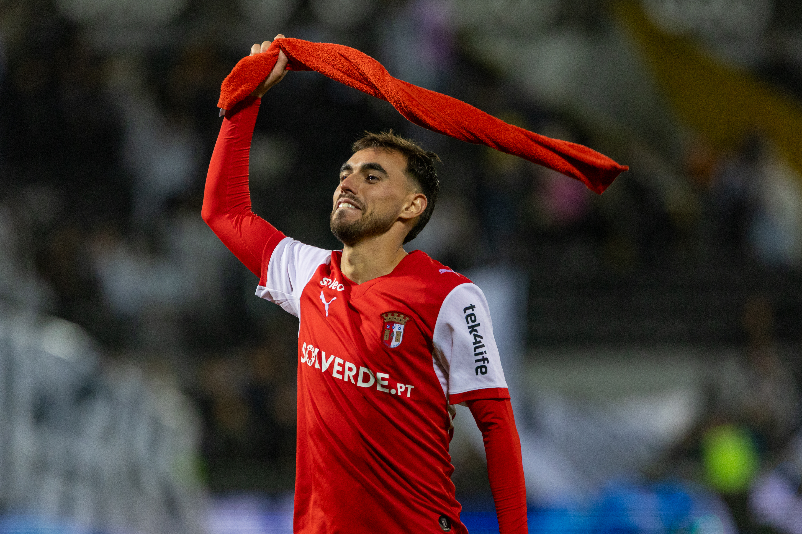
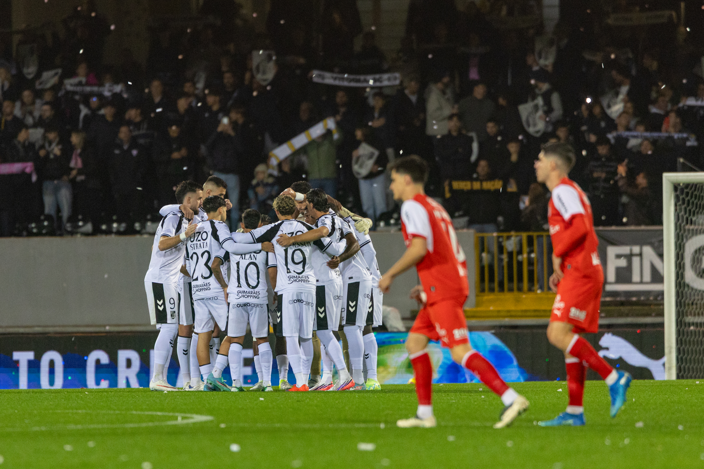

SC Braga won 2–0 away to Vitória SC on 21 November 2026 in the fourth round of the Taça de Portugal. The Minho derby at Estádio D. Afonso Henriques sent Braga through to the last 16.
Horta opened the scoring from the penalty spot in the 26th minute. Braga took that one-goal lead into the interval.
Navarro doubled the lead at the hour mark. Vitória SC did not score, and Braga closed out the tie with a clean sheet.


Image Media coverage
Reporting: IM News Editorial Desk
Image Media correspondent: Paulo Nômade